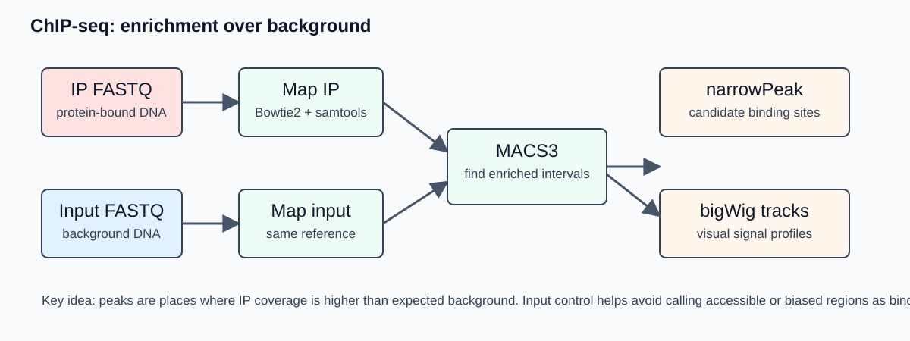

Day 3 - ChIP-seq from FASTQ to peaks, consensus intervals, and motifs
Reference mapping, signal tracks, MACS3 peak calling, a Day 4 peak set, and motif discovery
1. Before we start
You should have completed Day 1 and should be working from the root of your own workshop_ngs repository.
At the start of the practical:
- Windows users should open Visual Studio Code connected to Ubuntu WSL, open a WSL terminal, and run the commands there.
- macOS and Linux users should open the
workshop_ngsfolder in Visual Studio Code and use the VS Code terminal or a normal terminal. - Before running workshop commands, move to the repository root:
cd ~/workshop_ngs
pwdIf your repository is stored somewhere else, replace this path with the location of your own workshop_ngs folder. The command pwd should end with workshop_ngs.
Day 3 starts from the trimmed ChIP-seq FASTQ files created on Day 1:
results/day1_qc/trimmed_fastq/chipseq/Check that the ChIP-seq trimmed FASTQ files are present:
ls -lh results/day1_qc/trimmed_fastq/chipseq/*.trimmed.fastq.gzAlso check that the reference genome and the Bowtie2 index are present:
ls -lh reference_genome/genome.fa
ls -lh reference_genome/bowtie2_index/genome*.bt2If the Bowtie2 index is missing, run the Day 2 index-building step before continuing. The same genome index can be used for RNA-seq and ChIP-seq because both workflows map reads to the same H. pylori reference genome.
2. Overview of the day
Today we turn ChIP-seq reads into genome-coordinate alignments, signal tracks, peak intervals, a consensus peak set for Day 4, and motif-discovery input.
The main Day 3 workflow is:
trimmed ChIP-seq FASTQ
-> Bowtie2 mapping
-> sorted and indexed BAM files
-> filtered BAM files
-> normalized bigWig tracks for IGV
-> MACS3 peak calling with paired-end BAM input
-> consensus peak set for Day 4
-> simple peak-count matrix
-> peak DNA sequences
-> STREME motif discovery
Optional or instructor-demo QC steps:
filtered BAM files
-> phantom peak strand cross-correlation QC
per-sample MACS3 peak files
-> IDR replicate concordance checkThese QC steps are useful, but they are not required for the minimal downstream Day 4 integration path.
Today we will produce:
results/day3_chipseq/bam/*.sorted.bam
results/day3_chipseq/bam/*.filtered.bam
results/day3_chipseq/bigwig/*.cpm.bw
results/day3_chipseq/peaks/no_input/*_peaks.narrowPeak
results/day3_chipseq/peaks/no_input/*_summits.bed
results/day3_chipseq/peaks/consensus/day4_consensus_peaks.bed
results/day3_chipseq/counts/consensus_peak_counts.tsv
results/day3_chipseq/motifs/day4_consensus_peak_sequences.fa
results/day3_chipseq/motifs/streme/
results/logs/day3/Prepare the Day 3 folders:
mkdir -p scripts/day3_chipseq
mkdir -p results/day3_chipseq/bam
mkdir -p results/day3_chipseq/qc/phantom_peak
mkdir -p results/day3_chipseq/bigwig
mkdir -p results/day3_chipseq/peaks/no_input
mkdir -p results/day3_chipseq/peaks/consensus
mkdir -p results/day3_chipseq/counts
mkdir -p results/day3_chipseq/idr
mkdir -p results/day3_chipseq/motifs
mkdir -p results/logs/day3Each practical section below follows the same pattern:
- what the step means;
- which script to create or inspect;
- which Docker command to run;
- which files to check afterward.
3. Reference-based ChIP-seq FASTQ mapping
ChIP-seq mapping asks where each sequenced DNA fragment fits on the reference genome. The input is FASTQ. The output is a BAM file containing genomic coordinates for the aligned reads.
The mapping idea is mostly the same as Day 2. Here the biological material is different: ChIP-seq reads come from immunoprecipitated DNA fragments, not expressed RNA molecules. We are therefore not looking for splice junctions. For this bacterial dataset, reads should align as ordinary non-spliced DNA fragments.
If a splice-aware RNA-seq aligner is used for ChIP-seq in another project, splice discovery should be turned off or avoided. Normal ChIP-seq signal should not contain exon-exon junctions, and allowing spliced alignments can create biologically misleading placements.
In this workshop we use Bowtie2, a non-splice-aware genome aligner, which is appropriate for short-read ChIP-seq on a small bacterial genome.
3.1 What ChIP-seq mapping produces
After mapping and sorting, each sample has:
sample.sorted.bam
sample.sorted.bam.bai
sample.filtered.bam
sample.filtered.bam.baiThe unfiltered sorted BAM is useful for diagnostics. The filtered BAM is the working file for signal tracks, peak calling, and peak counting.
Useful mapping checks include:
| Metric | What it tells us |
|---|---|
| Overall alignment rate | Whether the reads match the chosen reference genome |
| Properly paired reads | Whether paired-end fragments map with expected orientation and distance |
| MAPQ distribution | Whether alignments are confidently placed |
| Multi-mapping | Whether reads may come from repetitive regions |
| Insert size or fragment length | Whether the library has plausible DNA fragments |
| Sample-to-sample consistency | Whether one sample behaves very differently from its replicates |
For ChIP-seq, the mapped fragment distribution is the signal. A wrong reference, poor pairing, many low-quality alignments, or many multi-mapping reads can create false peaks later.
3.2 Map ChIP-seq reads
Create scripts/day3_chipseq/01_map_bowtie2_sort_index.sh:
nano scripts/day3_chipseq/01_map_bowtie2_sort_index.shPaste this script:
#!/usr/bin/env bash
set -euo pipefail
fastq_dir="results/day1_qc/trimmed_fastq/chipseq"
index_prefix="reference_genome/bowtie2_index/genome"
bam_dir="results/day3_chipseq/bam"
log_dir="results/logs/day3"
THREADS="${THREADS:-2}"
mkdir -p "${bam_dir}" "${log_dir}"
if ! compgen -G "${index_prefix}"*.bt2 > /dev/null; then
echo "ERROR: Bowtie2 index files not found for prefix: ${index_prefix}" >&2
exit 1
fi
read1_files=("${fastq_dir}"/*_R1.trimmed.fastq.gz)
if [[ ! -e "${read1_files[0]}" ]]; then
echo "ERROR: No ChIP-seq R1 trimmed FASTQ files found in ${fastq_dir}" >&2
exit 1
fi
for read1 in "${read1_files[@]}"
do
read2="${read1/_R1.trimmed.fastq.gz/_R2.trimmed.fastq.gz}"
sample_id="$(basename "${read1}" _R1.trimmed.fastq.gz)"
sam_file="${bam_dir}/${sample_id}.sam"
bam_file="${bam_dir}/${sample_id}.sorted.bam"
filtered_bam="${bam_dir}/${sample_id}.filtered.bam"
if [[ ! -f "${read2}" ]]; then
echo "ERROR: paired read not found for ${read1}" >&2
exit 1
fi
echo "Mapping ${sample_id}"
bowtie2 \
-x "${index_prefix}" \
-1 "${read1}" \
-2 "${read2}" \
-p "${THREADS}" \
-S "${sam_file}" \
2> "${log_dir}/${sample_id}.bowtie2.log"
samtools sort \
-@ "${THREADS}" \
-o "${bam_file}" \
"${sam_file}"
samtools index "${bam_file}"
samtools flagstat "${bam_file}" > "${log_dir}/${sample_id}.flagstat.txt"
samtools view \
-@ "${THREADS}" \
-b \
-q 10 \
-f 2 \
-F 2828 \
-o "${filtered_bam}" \
"${bam_file}"
samtools index "${filtered_bam}"
samtools flagstat "${filtered_bam}" > "${log_dir}/${sample_id}.filtered.flagstat.txt"
rm -f "${sam_file}"
doneRun it:
docker run --rm \
--platform linux/amd64 \
-v "$PWD:/work" \
-w /work \
docker.io/fgualdr/ngs-bowtie2-samtools:latest \
bash scripts/day3_chipseq/01_map_bowtie2_sort_index.shCheck the outputs:
ls -lh results/day3_chipseq/bam/*.sorted.bam
ls -lh results/day3_chipseq/bam/*.filtered.bam
ls -lh results/logs/day3/*.bowtie2.log
cat results/logs/day3/*.bowtie2.log4. Clean BAM files with samtools
The mapping script already creates both unfiltered and filtered BAM files. For ChIP-seq, filtering defines which alignments are allowed to contribute to the local signal model. Peak callers do not know whether a local pileup came from true protein-DNA enrichment, ambiguous mapping, a read-pair problem, or a technical artifact.
The key filtering command in the script is:
samtools view \
-@ "${THREADS}" \
-b \
-q 10 \
-f 2 \
-F 2828 \
-o "${filtered_bam}" \
"${bam_file}"This keeps properly paired alignments with mapping quality at least 10. It removes common records that should not be treated as ordinary primary mapped fragments: unmapped reads, mate-unmapped reads, secondary alignments, failed-QC reads, and supplementary alignments.
The options mean:
| Option | Meaning in this workflow |
|---|---|
-b |
Write BAM output instead of SAM text |
-q 10 |
Keep alignments with mapping quality at least 10 |
-f 2 |
Keep reads from properly paired fragments |
-F 2828 |
Remove unmapped, mate-unmapped, secondary, failed-QC, and supplementary records |
-@ "${THREADS}" |
Use the thread setting from the script |
Duplicate handling is more subtle. Coordinate duplicates can be PCR duplicates, but a real strong binding site can also create many fragments at similar positions. Removing duplicates mechanically can erase true signal; keeping all duplicates can preserve PCR artifacts. For this teaching workflow we keep duplicates and interpret peak shape, mapping quality, read depth, and input-control limitations together.
In a larger project, duplicate handling should be chosen after checking library complexity and replicate behavior.
Check the samtools flagstat summaries:
ls -lh results/logs/day3/*.flagstat.txt
cat results/logs/day3/*.flagstat.txt
cat results/logs/day3/*.filtered.flagstat.txt5. Optional QC: phantom peak plot
This section is useful as an instructor demonstration or optional QC if there is enough time.
Strand cross-correlation is a ChIP-seq sanity check after mapping. For narrow transcription-factor ChIP-seq, forward-strand and reverse-strand reads often pile up on opposite sides of the same binding event. If we shift one strand relative to the other and compute how well the two profiles agree, a good library often shows a cross-correlation peak near the expected fragment length.
The important warning signal is the phantom peak: a cross-correlation peak near the read length rather than the fragment length. A strong phantom peak can indicate technical artifacts, low-complexity signal, or a library where read structure dominates more than real protein-DNA enrichment.
Create scripts/day3_chipseq/02_phantom_peak_cross_correlation.sh:
nano scripts/day3_chipseq/02_phantom_peak_cross_correlation.shPaste this script:
#!/usr/bin/env bash
set -euo pipefail
bam_dir="results/day3_chipseq/bam"
out_dir="results/day3_chipseq/qc/phantom_peak"
log_dir="results/logs/day3"
THREADS="${THREADS:-2}"
mkdir -p "${out_dir}" "${log_dir}"
bam_files=("${bam_dir}"/*.filtered.bam)
if [[ ! -e "${bam_files[0]}" ]]; then
echo "ERROR: No filtered BAM files found in ${bam_dir}" >&2
exit 1
fi
spp_script="$(command -v run_spp.R || true)"
if [[ -z "${spp_script}" ]]; then
echo "ERROR: run_spp.R was not found. Use the ChIP-seq QC Docker image." >&2
exit 1
fi
repo_root="${PWD}"
for bam in "${bam_files[@]}"
do
sample_id="$(basename "${bam}" .filtered.bam)"
sample_dir="${out_dir}/${sample_id}"
mkdir -p "${sample_dir}"
echo "Running phantom peak cross-correlation QC for ${sample_id}"
(
cd "${sample_dir}"
Rscript "${spp_script}" \
-c="${repo_root}/${bam}" \
-p="${THREADS}" \
-savp \
-out="${sample_id}.phantom_peak_qc.tsv"
) 2>&1 | tee "${log_dir}/${sample_id}.phantom_peak.log"
doneRun it:
docker run --rm \
--platform linux/amd64 \
-v "$PWD:/work" \
-w /work \
docker.io/fgualdr/ngs-chipseq-qc:latest \
bash scripts/day3_chipseq/02_phantom_peak_cross_correlation.shCheck the outputs:
find results/day3_chipseq/qc/phantom_peak -maxdepth 2 -type f | sort
cat results/day3_chipseq/qc/phantom_peak/*/*.phantom_peak_qc.tsv
ls -lh results/logs/day3/*.phantom_peak.logUse this plot together with mapping rate, duplicate behavior, replicate similarity, bigWig inspection, and peak-calling results. It is not a pass/fail test by itself.
6. Make normalized bigWig tracks
A BAM file stores individual alignments. A bigWig file stores genome-wide signal in a compact indexed format that can be opened in IGV.
For ChIP-seq, a bigWig lets us inspect:
- whether signal is concentrated in plausible enriched regions;
- whether biological replicates show similar patterns;
- whether a called peak corresponds to visible coverage;
- whether one sample has unusually noisy or flat signal.
Here we create CPM-normalized coverage tracks. CPM normalization adjusts for sequencing depth, so samples with different total mapped read counts are easier to compare visually. It does not replace statistical analysis and it is not a peak caller.
Create scripts/day3_chipseq/03_make_chipseq_bigwigs.sh:
nano scripts/day3_chipseq/03_make_chipseq_bigwigs.shPaste this script:
#!/usr/bin/env bash
set -euo pipefail
bam_dir="results/day3_chipseq/bam"
out_dir="results/day3_chipseq/bigwig"
log_dir="results/logs/day3"
THREADS="${THREADS:-2}"
mkdir -p "${out_dir}" "${log_dir}"
bam_files=("${bam_dir}"/*.filtered.bam)
if [[ ! -e "${bam_files[0]}" ]]; then
echo "ERROR: No filtered BAM files found in ${bam_dir}" >&2
exit 1
fi
for bam in "${bam_files[@]}"
do
sample_id="$(basename "${bam}" .filtered.bam)"
bamCoverage \
-b "${bam}" \
-o "${out_dir}/${sample_id}.cpm.bw" \
--normalizeUsing CPM \
--binSize 10 \
--numberOfProcessors "${THREADS}" \
2>&1 | tee "${log_dir}/${sample_id}.bamCoverage.log"
doneRun it:
docker run --rm \
--platform linux/amd64 \
-v "$PWD:/work" \
-w /work \
docker.io/fgualdr/ngs-deeptools:latest \
bash scripts/day3_chipseq/03_make_chipseq_bigwigs.shCheck the outputs:
ls -lh results/day3_chipseq/bigwig/*.cpm.bw
ls -lh results/logs/day3/*.bamCoverage.log7. Call peaks with MACS3
Peak calling asks which genomic intervals have more ChIP-seq signal than expected from background. For a transcription-factor-like protein, true binding often appears as a relatively narrow local enrichment.
For this workshop we use input-free MACS3 peak calling as the main route because it keeps the practical small and consistent. This is a teaching simplification, not a claim that input controls are unimportant.
Because the teaching FASTQ files are paired-end, we call MACS3 with -f BAMPE. This tells MACS3 to use paired-end fragment information from the BAM file rather than treating each alignment as an independent single-end read.
The command in this practical uses:
| MACS3 option | Meaning |
|---|---|
-t |
Treatment file, here the filtered ChIP-seq BAM |
-f BAMPE |
Paired-end BAM input; MACS3 uses the fragment extents |
-g 1.7e6 |
Approximate mappable genome size for this small bacterial genome |
-n |
Output name prefix |
--outdir |
Output folder |
--keep-dup all |
Keep duplicate-position reads for this teaching run |
Create scripts/day3_chipseq/04_call_peaks_macs3_no_input.sh:
nano scripts/day3_chipseq/04_call_peaks_macs3_no_input.shPaste this script:
#!/usr/bin/env bash
set -euo pipefail
bam_dir="results/day3_chipseq/bam"
out_dir="results/day3_chipseq/peaks/no_input"
log_dir="results/logs/day3"
genome_size="1.7e6"
mkdir -p "${out_dir}" "${log_dir}"
bam_files=("${bam_dir}"/*.filtered.bam)
if [[ ! -e "${bam_files[0]}" ]]; then
echo "ERROR: No filtered BAM files found in ${bam_dir}" >&2
exit 1
fi
for bam in "${bam_files[@]}"
do
sample_id="$(basename "${bam}" .filtered.bam)"
echo "Calling peaks for ${sample_id}"
macs3 callpeak \
-t "${bam}" \
-f BAMPE \
-g "${genome_size}" \
-n "${sample_id}" \
--outdir "${out_dir}" \
--keep-dup all \
2>&1 | tee "${log_dir}/${sample_id}.macs3.log"
doneRun it:
docker run --rm \
--platform linux/amd64 \
-v "$PWD:/work" \
-w /work \
docker.io/fgualdr/ngs-macs3:latest \
bash scripts/day3_chipseq/04_call_peaks_macs3_no_input.shCheck the outputs:
ls -lh results/day3_chipseq/peaks/no_input
wc -l results/day3_chipseq/peaks/no_input/*_peaks.narrowPeak
head results/day3_chipseq/peaks/no_input/*_peaks.narrowPeak
ls -lh results/logs/day3/*.macs3.log7.1 What is in a narrowPeak file?
narrowPeak is a BED-like interval format. The first three columns are the genomic interval:
| Column | Meaning |
|---|---|
| 1 | Chromosome or contig name |
| 2 | Start coordinate, 0-based |
| 3 | End coordinate |
| 4 | Peak name |
| 5 | Score |
| 6 | Strand, usually . for ChIP-seq peaks |
| 7 | Signal value |
| 8 | -log10(p-value) |
| 9 | -log10(q-value) |
| 10 | Summit offset relative to the peak start |
The peak interval is a statistical call, not a direct observation. Always compare peaks against BAM or bigWig signal, mapping quality, replicate behavior, and any available input-control information.
8. Make a consensus peak set and count table
Day 4 needs one stable peak file to integrate with RNA-seq and annotation. Instead of choosing one replicate, we create a simple consensus peak set by merging overlapping MACS3 peaks across the samples.
This step writes:
results/day3_chipseq/peaks/consensus/consensus_peaks.bed
results/day3_chipseq/peaks/consensus/day4_consensus_peaks.bed
results/day3_chipseq/counts/consensus_peak_counts.tsvday4_consensus_peaks.bed is the explicit ChIP-seq peak input for Day 4.
The count table is a simple teaching matrix from bedtools multicov. It counts filtered BAM alignments overlapping each consensus peak. For a formal differential-binding analysis with paired-end fragments, use a fragment-aware counter such as featureCounts on a consensus peak annotation or summarizeOverlaps in Bioconductor. Here, the count table is mainly a transparent QC and handoff file.
Create scripts/day3_chipseq/06_make_consensus_peak_counts.sh:
nano scripts/day3_chipseq/06_make_consensus_peak_counts.shPaste this script:
#!/usr/bin/env bash
set -euo pipefail
peak_dir="results/day3_chipseq/peaks/no_input"
bam_dir="results/day3_chipseq/bam"
out_dir="results/day3_chipseq/peaks/consensus"
count_dir="results/day3_chipseq/counts"
log_dir="results/logs/day3"
consensus_bed="${out_dir}/consensus_peaks.bed"
day4_peak_set="${out_dir}/day4_consensus_peaks.bed"
count_matrix="${count_dir}/consensus_peak_counts.tsv"
log_file="${log_dir}/consensus_peak_counts.log"
mkdir -p "${out_dir}" "${count_dir}" "${log_dir}"
peak_files=("${peak_dir}"/*_peaks.narrowPeak)
bam_files=("${bam_dir}"/*.filtered.bam)
if [[ ! -e "${peak_files[0]}" ]]; then
echo "ERROR: No MACS3 narrowPeak files found in ${peak_dir}" >&2
exit 1
fi
if [[ ! -e "${bam_files[0]}" ]]; then
echo "ERROR: No filtered BAM files found in ${bam_dir}" >&2
exit 1
fi
tmp_peaks="${out_dir}/all_sample_peaks.tmp.bed"
sorted_peaks="${out_dir}/all_sample_peaks.sorted.tmp.bed"
merged_peaks="${out_dir}/merged_peaks.tmp.bed"
raw_counts="${count_dir}/consensus_peak_counts.raw.tmp.tsv"
echo "Creating a merged consensus peak set" | tee "${log_file}"
: > "${tmp_peaks}"
for peak_file in "${peak_files[@]}"
do
sample_id="$(basename "${peak_file}" _peaks.narrowPeak)"
awk -v sample="${sample_id}" 'BEGIN { OFS = "\t" } NF >= 3 { print $1, $2, $3, sample }' \
"${peak_file}" >> "${tmp_peaks}"
done
sort -k1,1 -k2,2n "${tmp_peaks}" > "${sorted_peaks}"
bedtools merge \
-i "${sorted_peaks}" \
-c 4 \
-o count \
> "${merged_peaks}" 2>> "${log_file}"
if [[ ! -s "${merged_peaks}" ]]; then
echo "ERROR: Consensus peak set is empty after merging" >&2
exit 1
fi
awk 'BEGIN { OFS = "\t" } { printf "%s\t%s\t%s\tpeak_%04d\t%s\n", $1, $2, $3, NR, $4 }' \
"${merged_peaks}" > "${consensus_bed}"
cp "${consensus_bed}" "${day4_peak_set}"
echo "Counting filtered BAM alignments in consensus peaks" | tee -a "${log_file}"
bedtools multicov \
-bams "${bam_files[@]}" \
-bed "${consensus_bed}" \
> "${raw_counts}" 2>> "${log_file}"
{
printf "chrom\tstart\tend\tpeak_id\tpeak_record_count"
for bam in "${bam_files[@]}"
do
sample_id="$(basename "${bam}" .filtered.bam)"
printf "\t%s" "${sample_id}"
done
printf "\n"
cat "${raw_counts}"
} > "${count_matrix}"
rm -f "${tmp_peaks}" "${sorted_peaks}" "${merged_peaks}" "${raw_counts}"
echo "Wrote ${consensus_bed}" | tee -a "${log_file}"
echo "Wrote ${day4_peak_set}" | tee -a "${log_file}"
echo "Wrote ${count_matrix}" | tee -a "${log_file}"Run it:
docker run --rm \
--platform linux/amd64 \
-v "$PWD:/work" \
-w /work \
docker.io/fgualdr/ngs-bedtools:latest \
bash scripts/day3_chipseq/06_make_consensus_peak_counts.shCheck the outputs:
ls -lh results/day3_chipseq/peaks/consensus
head results/day3_chipseq/peaks/consensus/day4_consensus_peaks.bed
ls -lh results/day3_chipseq/counts/consensus_peak_counts.tsv
head results/day3_chipseq/counts/consensus_peak_counts.tsv
cat results/logs/day3/consensus_peak_counts.log9. Optional QC: replicate peak consistency with IDR
This section is useful as an instructor demonstration or optional replicate QC if there is enough time.
IDR means irreproducible discovery rate. It compares two ranked peak lists and asks which peaks are reproducible between replicates rather than strong in only one sample.
For this teaching workflow, IDR is a diagnostic plot and reproducibility check after MACS3. It does not prove that a peak is biologically direct, and it does not replace the Day 4 integration step.
Create scripts/day3_chipseq/05_idr_replicate_qc.sh:
nano scripts/day3_chipseq/05_idr_replicate_qc.shPaste this script:
#!/usr/bin/env bash
set -euo pipefail
peak_dir="results/day3_chipseq/peaks/no_input"
out_dir="results/day3_chipseq/idr"
log_dir="results/logs/day3"
mkdir -p "${out_dir}" "${log_dir}"
peak_files=("${peak_dir}"/*_peaks.narrowPeak)
if [[ ! -e "${peak_files[0]}" ]]; then
echo "ERROR: No MACS3 narrowPeak files found in ${peak_dir}" >&2
exit 1
fi
found_pair=0
for rep1_peak in "${peak_dir}"/*_1_*_peaks.narrowPeak
do
[[ -e "${rep1_peak}" ]] || continue
sample1="$(basename "${rep1_peak}" _peaks.narrowPeak)"
prefix="${sample1%%_1_*}"
condition="${sample1#${prefix}_1_}"
sample2="${prefix}_2_${condition}"
rep2_peak="${peak_dir}/${sample2}_peaks.narrowPeak"
if [[ ! -f "${rep2_peak}" ]]; then
echo "Skipping ${condition}: expected replicate peak file not found: ${rep2_peak}" >&2
continue
fi
found_pair=1
echo "Running IDR for ${condition}: ${sample1} versus ${sample2}"
idr \
--samples "${rep1_peak}" "${rep2_peak}" \
--input-file-type narrowPeak \
--rank p.value \
--idr-threshold 0.05 \
--output-file "${out_dir}/${condition}.idr.narrowPeak" \
--plot \
--log-output-file "${log_dir}/${condition}.idr.log"
done
if [[ "${found_pair}" -eq 0 ]]; then
echo "ERROR: No replicate 1/2 peak pairs found in ${peak_dir}" >&2
exit 1
fiRun it:
docker run --rm \
--platform linux/amd64 \
-v "$PWD:/work" \
-w /work \
docker.io/fgualdr/ngs-chipseq-qc:latest \
bash scripts/day3_chipseq/05_idr_replicate_qc.shCheck the outputs:
find results/day3_chipseq/idr -maxdepth 1 -type f | sort
ls -lh results/logs/day3/*.idr.logWhen reading the IDR output, focus on:
- whether replicate peak ranks agree for the strongest peaks;
- whether many peaks are strong in only one replicate;
- whether the IDR plot looks similar across conditions;
- whether IDR-supported peaks also look plausible in the bigWig tracks.
10. Input controls and peak-calling design
Input DNA is fragmented DNA sequenced before immunoprecipitation. It is not a perfect negative control, but when it is well matched and sufficiently sequenced it helps model background effects such as:
- local mappability differences;
- fragmentation or GC bias;
- repetitive regions;
- copy-number or amplification effects;
- regions with high non-specific accessibility.
The important design point is that input is not automatically informative just because it exists. If the input library is shallow, its reads may be too sparse to estimate local noise or mappability effects at the same resolution as the ChIP sample. In that situation, the apparent control signal can be unstable, and MACS3’s local background model may contribute more to the final thresholding than the sparse input track.
The two common MACS3 routes are:
| Route | Command idea | Strength | Limitation |
|---|---|---|---|
| With input | macs3 callpeak -t IP.bam -c input.bam ... |
Can improve background modeling when the input is matched and deep enough | Expensive; shallow or noisy input may add little local information |
| Without input | macs3 callpeak -t IP.bam ... |
Simple, useful for teaching and some pilot analyses; relies strongly on local background modeling | More dependent on peak shape, replicate behavior, and downstream biological validation |
Our small teaching workflow captures the logic of the published analysis, but it is simplified for laptop-scale execution.
11. Extract peak sequences
Motif discovery uses DNA sequences, not BAM files or bigWig tracks. To test whether the called peaks contain enriched sequence patterns, we extract the reference genome sequence under the Day 4 consensus peak intervals.
This step uses:
reference_genome/genome.fa
results/day3_chipseq/peaks/consensus/day4_consensus_peaks.bedand writes:
results/day3_chipseq/motifs/day4_consensus_peak_sequences.faCreate scripts/day3_chipseq/07_extract_peak_sequences.sh:
nano scripts/day3_chipseq/07_extract_peak_sequences.shPaste this script:
#!/usr/bin/env bash
set -euo pipefail
genome="reference_genome/genome.fa"
peak_file="results/day3_chipseq/peaks/consensus/day4_consensus_peaks.bed"
out_dir="results/day3_chipseq/motifs"
log_dir="results/logs/day3"
out_fasta="${out_dir}/day4_consensus_peak_sequences.fa"
mkdir -p "${out_dir}" "${log_dir}"
if [[ ! -f "${genome}" ]]; then
echo "ERROR: genome FASTA not found: ${genome}" >&2
exit 1
fi
if [[ ! -f "${peak_file}" ]]; then
echo "ERROR: Day 4 consensus peak set not found: ${peak_file}" >&2
exit 1
fi
echo "Extracting consensus peak sequences" | tee "${log_dir}/extract_peak_sequences.log"
bedtools getfasta \
-fi "${genome}" \
-bed "${peak_file}" \
-fo "${out_fasta}" \
2>&1 | tee -a "${log_dir}/extract_peak_sequences.log"
echo "Wrote ${out_fasta}" | tee -a "${log_dir}/extract_peak_sequences.log"Run it:
docker run --rm \
--platform linux/amd64 \
-v "$PWD:/work" \
-w /work \
docker.io/fgualdr/ngs-bedtools:latest \
bash scripts/day3_chipseq/07_extract_peak_sequences.shCheck the outputs:
ls -lh results/day3_chipseq/motifs/day4_consensus_peak_sequences.fa
head results/day3_chipseq/motifs/day4_consensus_peak_sequences.fa
cat results/logs/day3/extract_peak_sequences.log12. Motif discovery with STREME
A transcription factor often recognizes a family of related DNA words rather than one exact sequence. A motif summarizes base preferences at each position. Motif discovery asks whether some short DNA patterns occur more often in the peak sequences than expected by chance or relative to a background model.
In this workshop we use STREME for de novo motif discovery. It searches the extracted consensus peak sequences for enriched short patterns. For a less well-annotated bacterial system, de novo discovery is often more useful than testing only a large eukaryote-focused motif database.
Motif discovery is a plausibility check, not proof of direct regulation. A convincing interpretation combines motif results with peak quality, replicate consistency, gene proximity, RNA-seq changes, and biological context.
Create scripts/day3_chipseq/08_run_streme.sh:
nano scripts/day3_chipseq/08_run_streme.shPaste this script:
#!/usr/bin/env bash
set -euo pipefail
fasta_dir="results/day3_chipseq/motifs"
out_dir="results/day3_chipseq/motifs/streme"
log_dir="results/logs/day3"
mkdir -p "${out_dir}" "${log_dir}"
fasta_files=("${fasta_dir}"/*_peak_sequences.fa)
if [[ ! -e "${fasta_files[0]}" ]]; then
echo "ERROR: No peak-sequence FASTA files found in ${fasta_dir}" >&2
exit 1
fi
for fasta in "${fasta_files[@]}"
do
sample="$(basename "${fasta}" _peak_sequences.fa)"
echo "Running STREME for ${sample}"
streme \
--p "${fasta}" \
--dna \
--oc "${out_dir}/${sample}" \
2>&1 | tee "${log_dir}/${sample}.streme.log"
doneRun it:
docker run --rm \
--platform linux/amd64 \
-v "$PWD:/work" \
-w /work \
docker.io/fgualdr/ngs-streme:latest \
bash scripts/day3_chipseq/08_run_streme.shCheck the outputs:
find results/day3_chipseq/motifs/streme -maxdepth 2 -type f | sort
ls -lh results/logs/day3/*.streme.logWhen reading STREME output, focus on:
- how many peak sequences were used;
- motif width;
- enrichment strength;
- whether the motif appears in many peaks or only a small subset;
- whether the motif is biologically plausible for the protein and organism;
- whether the peaks came from an input-free or input-controlled analysis.
13. Checkpoint route
If mapping, BAM processing, MACS3 peak calling, consensus-peak construction, or STREME is not feasible locally, continue from instructor-provided checkpoint files.
Record the checkpoint route explicitly in your project notes:
ChIP-seq mapping, peak calling, consensus peak construction, and motif discovery were demonstrated in class. This repository uses provided peak, bigWig, count, and motif checkpoint files for downstream interpretation because local execution was not feasible on this laptop.Do not hide checkpoint use. A reproducible analysis record should say which files were generated locally and which files were provided.
14. Git checkpoint
Before committing, check what Git sees:
git statusAdd scripts, small QC tables/plots, peak tables, count tables, motif reports, and logs:
git add scripts/day3_chipseq
git add results/day3_chipseq/qc
git add results/day3_chipseq/peaks
git add results/day3_chipseq/counts
git add results/day3_chipseq/idr
git add results/day3_chipseq/motifs
git add results/logs/day3
git commit -m "Add ChIP-seq peak calling consensus peaks and motifs"Avoid committing BAM and bigWig files unless the instructor explicitly provides tiny example files for demonstration. These files are usually too large for a normal Git repository.
If you are using GitHub:
git push15. Expected outputs
By the end of Day 3, you should have some combination of:
results/day3_chipseq/bam/*.sorted.bam
results/day3_chipseq/bam/*.filtered.bam
results/day3_chipseq/qc/phantom_peak/
results/day3_chipseq/bigwig/*.cpm.bw
results/day3_chipseq/peaks/no_input/*_peaks.narrowPeak
results/day3_chipseq/peaks/no_input/*_summits.bed
results/day3_chipseq/peaks/consensus/day4_consensus_peaks.bed
results/day3_chipseq/counts/consensus_peak_counts.tsv
results/day3_chipseq/idr/
results/day3_chipseq/motifs/day4_consensus_peak_sequences.fa
results/day3_chipseq/motifs/streme/
results/logs/day3/*.bowtie2.log
results/logs/day3/*.flagstat.txt
results/logs/day3/consensus_peak_counts.logLarge BAM and bigWig files are working files, not normal Git files. Small peak tables, logs, motif outputs, and notes are appropriate to commit unless the instructor says otherwise.
16. Common problems
| Problem | Likely cause | What to check |
|---|---|---|
| No FASTQ files found | Day 1 was skipped or files are in a different folder | ls results/day1_qc/trimmed_fastq/chipseq/ |
| Bowtie2 index missing | Day 2 index step was not run | ls reference_genome/bowtie2_index/ |
| Low alignment rate | Wrong reference, contamination, poor FASTQ quality, or wrong sample labels | Bowtie2 logs and Day 1 FastQC reports |
| Few reads after filtering | R1/R2 pairing problem, strict MAPQ behavior, or poor mapping | Compare unfiltered and filtered flagstat files |
| Strong phantom peak | Read-length artifact, low-complexity library, weak enrichment, or duplicate-driven structure | Phantom peak plot, cross-correlation table, duplicate behavior, and bigWig tracks |
| MACS3 calls many odd peaks | No input control, repetitive regions, duplicate artifacts, or noisy library | BigWig tracks, peak scores, and replicate consistency |
| Consensus peak file is empty | MACS3 called no peaks, peak filenames are missing, or peak coordinates failed sorting/merging | MACS3 logs and results/day3_chipseq/peaks/no_input/ |
| STREME finds no clear motif | Too few peaks, noisy peaks, broad/non-specific binding, or weak motif signal | Number of sequences, peak quality, and input-control limitations |
17. Self-check questions
- Why is ChIP-seq normally mapped as non-spliced genomic DNA?
- Why do we filter BAM files before making signal tracks and calling peaks?
- Why does paired-end ChIP-seq peak calling use
BAMPEhere? - What does an input control help MACS3 estimate, and why does input depth matter?
- Why is a peak interval different from a bigWig signal track?
- Why do we create
day4_consensus_peaks.bedinstead of using only one replicate’s peak file? - What is the difference between a simple peak-count matrix and a formal differential-binding analysis?
- Why does motif enrichment support interpretation but not prove direct regulation by itself?